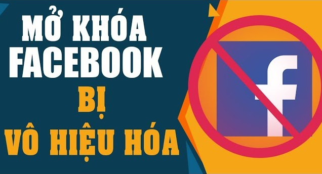
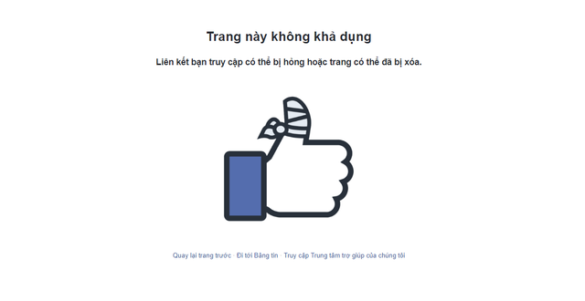
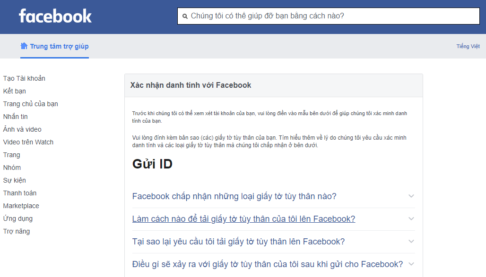
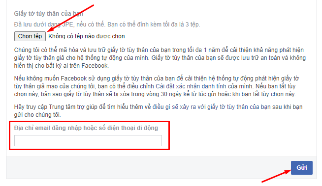
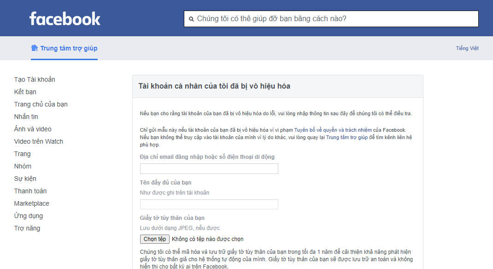
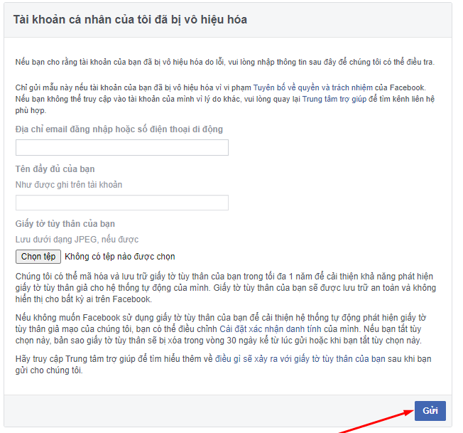
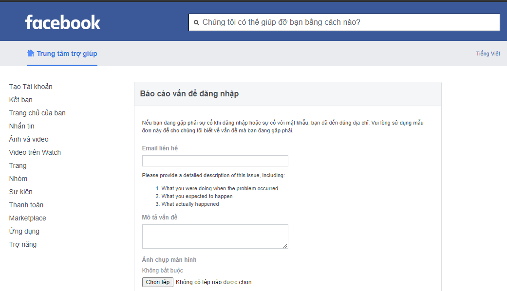
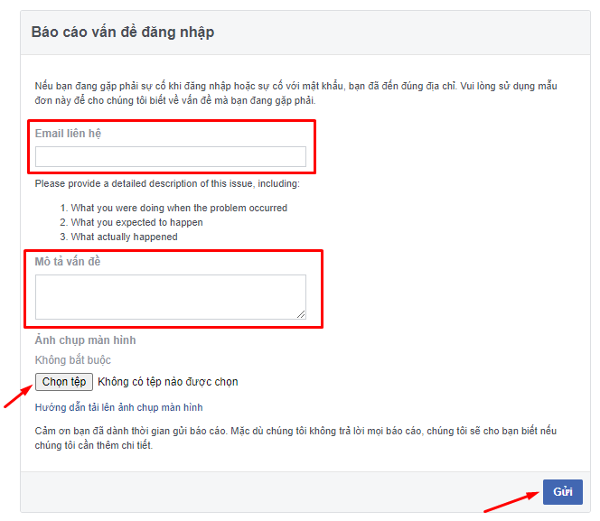

Tài khoản Facebook bị vô hiệu hóa: 3 cách mở khóa cực nhanh

Ty Nguyen
CEO ❤️ AhaChat. Love babies & chatbot.
Trong thời gian gần đây có khá nhiều người liên hệ đến blog để hỏi về vấn đề tài khoản Facebook bị vô hiệu hoá. Và hầu hết người dùng Facebook nào cũng đều thắc mắc về lý do tại sao lại bị khóa như vậy và cách mở khoá tài khoản Facebook bị vô hiệu hoá như thế nào. Để giải đáp được thắc mắc của bạn, bài viết dưới đây giới thiệu đến bạn 3 cách mở khoá tài khoản Facebook bị vô hiệu hoá cực kỳ đơn giản. Cùng chúng tôi tìm hiểu nhé!
1. Xác định xem tài khoản Facebook của bạn bị khóa hay chưa?
Trước khi tham khảo bài hướng dẫn cách mở khoá tài khoản facebook bị vô hiệu hoá dưới đây, bạn cần phải chắc chắn rằng tài khoản Facebook của bạn có thật sự bị Facebook khoá hay bị vô hiệu hoá hay không.
Để kiểm tra tài khoản Facebook của bạn có thật sự bị khoá hay bị vô hiệu hoá, bạn hãy thử gõ đường link URL Profile Facebook của bạn trên trình duyệt web. Đường link đó sẽ có dạng facebook.com/ahachater
Khi bạn bấm vào đường link đó nếu hiện ra một trang có thông báo như ảnh dưới thì chắc chắn tài khoản Facebook của bạn đã bị vô hiệu hoá và không có ai có thể vào tài khoản của bạn vào lúc đó.

2. Một số lý do khiến tài khoản Facebook của bạn bị vô hiệu hoá
Có rất nhiều nguyên nhân khiến tài khoản Facebook của bạn bị vô hiệu hoá. Tuy nhiên, nguyên nhân chính vẫn là việc tài khoản Facebook của bạn đã vi phạm phải chính sách, điều khoản nào đó của Facebook.
Dưới đây là một số nguyên nhân khiến tài khoản Facebook bị vô hiệu hoá mà người dùng Facebook thường gặp phải nhất:
- Tài khoản Facebook của bạn đã đăng tải thông tin nào đó vi phạm đến quy tắc cộng đồng và các điều khoản của Facebook.
- Tên tài khoản chứa những ký tự bất thường hoặc bạn sử dụng tên Facebook giả.
- Tài khoản của bạn giả mạo một nick Facebook nào khác
- Chia sẻ, đăng tải các hình ảnh, video không phù hợp hoặc vi phạm bản quyền.
- Có hành vi quấy rối đến các tài khoản Facebook khác và bị báo cáo
- Quảng cáo các dịch vụ, các thông tin khuyến mãi hay có những hành vi mà không được Facebook cho phép và bị đánh dấu là spam.
3. Cách mở khoá tài khoản Facebook bị vô hiệu hoá
Khi tài khoản Facebook của bạn bị vô hiệu hoá, chắc hẳn bạn khá lo lắng không biết làm thế nào để mở khóa và khôi phục nó. Dưới đây là một số cách lấy lại tài khoản Facebook bị vô hiệu hoá cực đơn giản và dễ dàng:
Cách 1: Mở tài khoản Facebook bị vô hiệu hoá bằng cách xác minh danh tính do Facebook nghi ngờ tài khoản ảo và tự khoá
Với cách này, thời gian Facebook xem xét yêu cầu và mở khoá tài khoản cho bạn thường là 3- 36 tiếng.
Cách mở khoá:
Đầu tiên, bạn nhấp chuột vào link mở khóa tại đây giao diện hiện ra như hình dưới

Tiếp đó bạn cần tải hình ảnh của các loại giấy tờ tùy thân như chứng minh nhân dân, giấy phép lái xe, thẻ học sinh, sinh viên. yêu cầu hình ảnh của các loại giấy tờ phải rõ nét khuôn mặt và chữ ghi trên đó. Nếu bạn tải được 2 đến 4 loại giấy tờ tùy thân thì càng tốt.
Cuối cùng, nhập chính xác SĐT hoặc email bạn đã đăng ký cho tài khoản Facebook đó, bấm chọn Gửi và chờ Facebook xét duyệt và mở lại tài khoản cho bạn.

Cách 2: Mở tài khoản Facebook bị vô hiệu hoá do kẻ xấu báo cáo mạo danh tài khoản của người khác
Thời gian mở khoá tài khoản Facebook bị vô hiệu hoá trong trường hợp này là 6 đến 48 tiếng
Để mở khoá tài khoản Facebook bị vô hiệu hoá trong trường hợp này, bạn làm theo các bước sau:
Đầu tiên, bạn bấm vào link mở khóa tại đây, giao diện như hình dưới đây sẽ hiện ra

Tiếp theo, bạn cần nhập đầy đủ và chính xác các thông tin mà Facebook yêu cầu bao gồm:
- Nhập chính xác tên email hoặc số điện thoại bạn đã đăng ký với Facebook
- Viết đầy đủ tên tài khoản facebook của bạn
- Tải lên ảnh chụp giấy tờ tùy thân của bạn như chứng minh thư nhân dân, giấy phép lái xe, thẻ học sinh, sinh viên. Có thể tải được 2 đến 3 loại giấy tờ tùy thân thì càng tốt.
Cuối cùng bấm Gửi

Cách 3: Mở tài khoản Facebook bị vô hiệu hoá do quên mật khẩu cũ, đăng nhập quá giới hạn và yêu cầu xác minh danh tính bạn bè
Thời gian để Facebook xem xét và mở khoá tài khoản trong trường hợp này là từ 12 đến 36 tiếng
Cách mở khóa trong trường hợp này như sau:
Bạn truy cập vào link mở khóa tại đây
Sau khi mở đường link, giao diện như hình dưới hiện ra

Lúc này, bạn cần nhập các thông tin mà Facebook yêu cầu gồm:
- Email đăng ký tài khoản Facebook
- Nhập thông tin mô tả vấn đề lỗi bạn đang gặp phải, viết tiếng việt có dấu đúng chính tả. phần này nên trình bày rõ ràng, mô tả cụ thể vấn đề bạn đang gặp phải khi đăng nhập và mong muốn Facebook mở lại tài khoản cho bạn kèm với lời cảm ơn.
- Tải lên ảnh chụp màn hình thông báo lỗi khi bạn đăng nhập vào tài khoản facebook bị thông báo vô hiệu hoá
Sau khi hoàn tất phần điền thông tin, bạn bấm nút Gửi rồi chờ Facebook phê duyệt yêu cầu và xem xét tài khoản của bạn.

Liên quan: Gỡ Facebook Checkpoint: Hướng dẫn cách mở khóa trong 1 nốt nhạc
Bài viết trên đây đã chia sẻ đến bạn một số lý do khiến tài khoản Facebook bị vô hiệu hoá cũng như hướng dẫn bạn 3 cách mở khoá tài khoản Facebook bị vô hiệu hoá cực kỳ đơn giản. Nếu bạn có phương pháp nào hay hơn thì có thể chia sẻ ngay mục bình luận dưới đây để cùng trao đổi với chúng tôi nhé. Chúc bạn thành công!